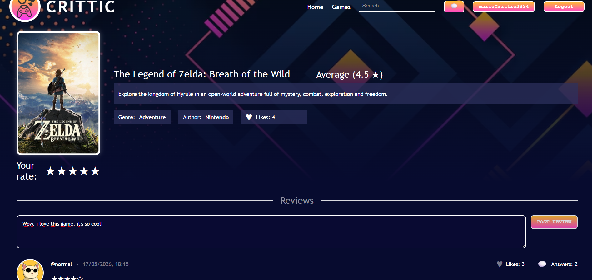
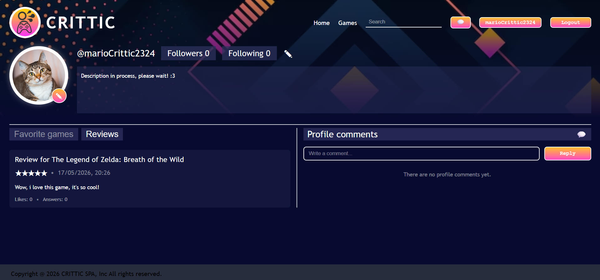
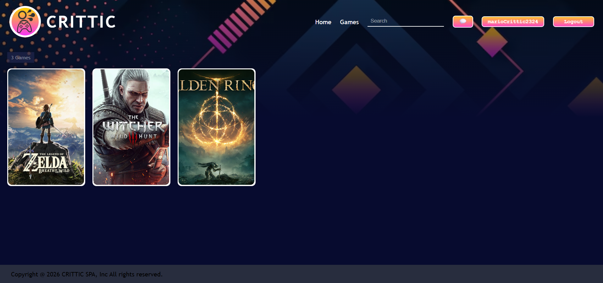
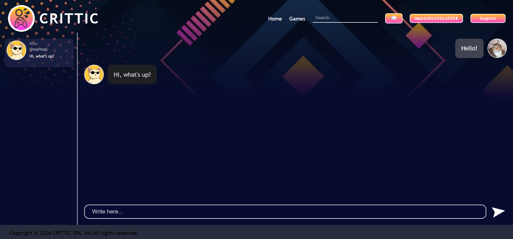

Share your opinions with the world!
What is CRITTIC?
CRITTIC is a fancy and dynamic way to share your opinions and critics of videogames with the world!


Why CRITTIC?
In CRITTIC you can make a profile so everyone can know about you, see what are you up to and trust you! Show
your favorite games, post screenshots and make friends!
When CRITTIC?
As soon as you click in the "Games" page, you can navigate through various games in our library and start
posting your reviews!


Meet other CRTTICS!
Remember to create an account to start personalizing your profile and chat with other people!